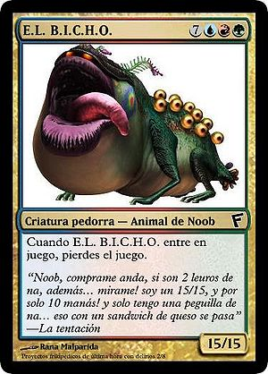
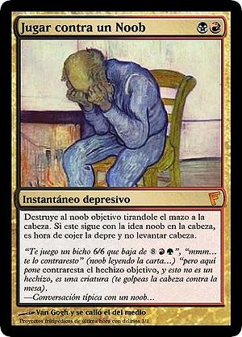
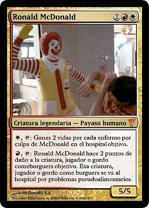
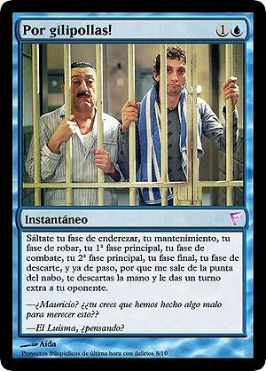
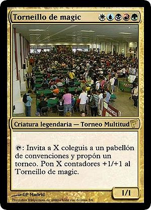

Magic the Gathering
 De: La Frikipedia, la enciclopedia extremadamente seria.
De: La Frikipedia, la enciclopedia extremadamente seria.

|
Hay frikipedistas que creen que este artículo debería ser fusionado con Magic.
|
De la serie Videojuegos:
Magic the Gathering

| Desarrollado por:
|
Un tal mago de la costa...
|
| Distribuido por:
|
La mafia Frikojaponesa
|
| Diseñado por:
|
Existe eso??
|
| Motor
|
Tus manos, tu PC, tu cabeza
|
| Género(s)
|
Rectángulos con cosas dibujadas
|
| Fecha de lanzamiento:
|
vía e-Mule hace años
|
| Modos de juego:
|
Noob; Post Noob; Entendido; Listillo; Prepotente; Anti Noob; Disconected.
|
| Requisitos:
|
ser Friki con tiempo muuuuuucho tiempo libre.
|
| Disponible en:
|
A partir de Spectrum, pentium -2, tarjeta grafica, el rasca de la Once
|
| Formatos:
|
T1, T1'5, T1'X, T2, T3, TTAS
|
| Edades:
|
Edades no, eones..
|
| Puntuaciones:
|
pros: 9-0-0 Noobs: 0-0-9
|
Vas a perder...
Magic the Gathering es unjuego de rol estrategia que consiste en humillar o ser humillado. Consta de cartas, frikis y mesa o cualquier otro lugar donde apoyar las cartas. También tiene una versión Online legal y de pago (MOL), y otra también legal, pero gratis (MWS), y la gente gilipollas como IP anónima paga, si es que...
¿Cómo no ser un noob? Reglas básicas
Para poder jugar a magic, necesitas, 1º antes que nada, existir. Una vez existas, podrás empezar a jugar.(una mentira del antiguo autor del post)
Requisitos
- Dinero, mucho dinero, grandes cantidades de dinero mwahahaha...
- Cerebro, aunque no lo parezca.
- Manos, o alguien que juegue por tí.
- Culo, es imprescindible para sentarte.
- Sillas. Una para tí, y otra para el amigo imaginario con el que juegas.(y/o tu perro/gato/hamster/batman,etc)
- Mesa u otro soporte.
- CARTAS de MTG (Magic The Gathering, por si no lo has pillado todavía)
- Espacio, para dejar fluir las ideas frikis.
Una vez estén los requisitos, es hora de aprendeherse las reglas del juego.
Reglas del jogo
- Un mazo tiene que tener como mínimo 60 cartas... si... IP anónima puedes hacerte un mazo de 2000 cartas, pero ahora a lo que estamos ¬¬
- Un jugador tiene que tener como mínimo un cerebro.(BLASFEMIA!, ESO NO EXISTE,el antiguo dueño del post ha citado a un ser mitologico, os ruego que le perdoneis y lo olvideis, si no, homer os violara hasta que os sangre el flequillo)
- Como algo adecuado, un mazo tiene que ser 1/3 de las cartas tierras (más adelante lo explicificaré) y los 2/3 restantes en cartas que no sean tierras (Evidentemente ¬¬).
- Las cartas que no son tierras, se llaman hechizos (Uh! la... la...) y se clasifican en:
- Criaturas o Bichos: Sirven, en general pa meterle palos
por el culo al oponente. Tienen fuerza y resistencia, pero no inteligencia (¡¡¡Toma Rima!!!). Para poder jugar un bicho (jugar quiere decir que lo juegas) necesitas tierras, porque arriba de la carta hay uno o más simbolitos que se pagan con tierras (ya lo entenderás).
- Conjuro (que te lanzo una mardición, jarrrr!): Se juegan a velocidad de conjuro, osease, solo en tu turno, y solo en las fases principales (Más adelante, joer, no te impacientes.) Los conjuros hacen cosas como, cagar bichos, hacer pupa al oponente, ganar vida, perder vida (para masoquistas), robar cartas (si, se que suena mal, pero lo entenderás), etc. Cuando hace el efecto se va al cementerio y nos ponemos de luto.
- Instantáneo (como el colacao xD): Es una variedad del conjuro, hace las mismas cosas, pero puedes jugarlo cuando te salga del nabo, y en respuesta a lo que te salga del nabo. Cuando hace el efecto se va al cementerio y nos ponemos de luto.
- Encantamiento (otro nombre friskiwiski): Se juega a velocidad de conjuro, es un permanente (permanente quiere decir que permanece en juego), puede hacer efectos como los conjuros, o tener habilidades disparadas (Piun!), estáticas (no se mueven ni a palos) o activadas (se llaman así, pero tienes que activarlas ¬¬), pueden convertirse en bicho, pueden encantar (anexar) a un bicho (que bonito es el amor, snif!) a una tierra, a un artefacto, a otro encantamiento, etc.
 Próxima víctima de un noob como
IP anónima.
- Artefactos o cacharras: Son una variante de los encantamientos, hacen lo mismo, solo que se llaman artefactos, y en vez de anexarse o encantarse, se equipan (as conjuro's speed), lo way, es que si un bichejo encantado picia, en encantamento tambien, pero las cacharras equipadas se quedan en juego. También existen las criaturas artefacto, o tambien denominados autómatas o bicholata.
- Planeswalkers (Caminantes de Planos (si olle, que me piro del diédrico y me voy a un axonométrico, oki?)): Son una especie de pseudoencantamiento que tienen tres habilidades diferentes y que tienen vida, como los jugadores. La vida de un PW (planeswalker) se representa abajo to the derecha de la carta con un nº, se le quitan puntos de vida por cada daño recibido, si no tienen puntos de vida, al
puto otro barrio (cementerio = luto).
- Una criatura no puede atacar ni tapearse (girarse) por alguna habilidad activada el turno en el que entra excepto que tenga la habilidad de prisa (Que gran proeza). En combate, un bicho se mete de hostias con otro, y el daño resultante se calcula así: La fuerza de tu bichejo se aberroncha contra la resistencia de el otro bichejo y la fuerza del otro bichejo, se embiste con la resistencia del tuyo. Si la fuerza de un bicho es mayor o igual que la resistencia del defensor, el bichejo defensor muere. Si los dos bichos se mueren entre ellos, pues se mueren y ya está. Si un bicho no muere por daño de otro, se le queda el daño asignado durante ese turno, y si algún efecto capullín le mete de yoyas hasta darle lo que le faltaba pa' piciar (o más si se es ansioso), pues se muere y ya está cohones. Los bichos gordos, a menudo atraen a noobs, pero estos esconden algún drawback en algún sitio, pero como los noobs, cuando miran a una carta miran su grosor, no se dan cuenta de que: a) es imposible bajarlos; b)Si lo bajas la has cagado.
- Solo se puede jugar una tierra por turno. Las tierras sirven para plantar plantas, que crezcan, que den frutos, y nos comemos los frutos, y de los frutos sale él mana proporcionado por las tierras. Este proceso es más sencillo en MTG, tu giras la tierra 90º, y ya tienes el maná (no ves como no es tan dificil). El maná no dura eternamente, así que si no lo gastas en algo (yo que sé, un Bollicao, una PLayStation, un muñeco de Chuck Norris, o quién sabe, para jugar un hechizo del juego??) el maná se revela, se pone en huelga, y te mete una jostia de 1 punto de daño. Para pagar los circulitos tan cachondos que vienen arriba a la derecha de la carta, se sigue la siguiente jerarquía:
- Si el símbolo es 0, no tienes que pagar nada, te sale tan gratis como
robar coger lápizes de IKEA.
- Si el símbolo es 1, tienes que girar qalquier cacho de tierra que tengas enderezada (no está girada), girarla, obtener el maná, y gastarlo en esa carta.
- Si el símbolo es solo uno, y de color (¡not to racism!), hay que girar una tierra del color del simbolito, evidentemente (Es que no tengo rojo pa pagarlo, pero como soy daltónico, lo pago con verde mwahahaha... ¡NO!).
- Y ahora vamos con lo "difícil", sí, por que la gente es tonta, a ver un ejemplo, tengo una carta cuyos símbolos son: 2WR (W = white, U = Blue, B = Black, R = Red, G = Green, S = Snow, 1 = 1, 2 = 2, 3 = 3, 4 = 4, 5 = x el culo t la jinco, etc) hay gente que lo interpreta como le sale de la punta
de la polla del nabo, dicen "eso es 2xWR, osease, WWRR" ¡¡NOOO!!, dos es dos, W es uno blanco y R es uno rojo, haber que coña dificultad es esa cohones!! "Entonces q pago, dos manás de qalquier color... si, uno rojo... si, uno blanco... si y luego, 2x WR..." NO JODER!!!!!!!!!!!!!!, 2 + (1 x W) + (1 x R) = 4cc (4 Converted (mana) cost, o nº total de mana a pagar, joer, si es que hay paketes pa to!!).
- Hay simbolos especiales (manda huevos, que pasa, que como son "especiales" no les podemos insultar ni nada, ni meternos con ellos, pos ahora os vais a joder todos, me voy a tirar de un 6º, en la calle sextencio, portal nº6, y me voy a quedar "tetraplejiquito" ahora le vais a llamar especial, Hm!) en fin, a lo que iba, hay simbolos especiales... llamados híbridos... no joder, no son mutantes coño!, que se pueden pagar o uno de los que sale, o otro. Se represntan como: Inicial de un color/inicial del otro (p.ej B/W = Black or White (¡not to racism!), R/G = Red or Green, este es el que más mola, pq los Daltónicos se tiranhoras decidiendo cual es el color, serán jilipollas xD!)
 Carta de banquillo contra noobs
- Hay unos instantáneos muy molones qu dicen: contraresta el hechizo objetivo. Bien explicaré que es contrarrestar. Contrarrestar es como decirle al otro, "¿Me bajas esta carta, que es la única que te queda, y que te da la partida segura?, pues te vas a ir cagando en mis muertos pq juego este counter (Contrahechizo, que contrarresta, no Counter Strike so
memo ¬¬) y te vas llendo pa casa" ーHIJO DE LA GRAN PUTAAAAA...!!!!!!! (Dice el oponent en respuesta). En resumen, un conter manda a tomar por culo un hechizo (Creo que quedó claro antes, pero por si acaso lo repito, un hechizo puede ser bicho/conjuro/instant/encantamiento/cacharro/PW, pero no tierra, nunca tierra, NUNCA!), eso es que se va al cementerio (= Luto) y no ha pasado ná!. Hay jente (NOOBs de MIERDA) que dicen "pero eso no es un hechizo, es una criatura", ante estos casos puedes hacer distintas cosas:
- Pegarte cabezazos contra la mesa.
- Pegarle cabezazos a él/ella/eso contra la mesa.
- Tirarle el mazo a la cabeza.
- Con paciencia, muuuuuuuuuuuuucha paciencia, explicarselo.
- Como ves que lo anterior no sirve de nada, le propinas una Patada en los cojones frikipropulsada.
- Romperle las cartas (es cruel, pero te quedas a gusto, oh si!)
- Llamarle noob de mierda y colgar el server (Esto solo se puede hacer online, y jugando con MWS (Magic Work Station), Aprentice o MOL (Magic On-Line).
- Noobearlo hasta la muerte.
- Suicidarte.
- Contratar a la mafia magiquera para que le pegue con Martillos de Guerra Loxodón por todas partes (Esta frase tiene un grado de Frikismo de Magic de un 200%, para enterarse mejó consultar Martillo de Guerra Loxodón.)
- Meterle una cantidad de fuego impresionante en el cuerpo hasta que saque cucarachas por las cuencas de los ojos y vomite hormigas asta que inundes el local donde estés jugando.Luego agarras sus cartas y las pones en tu álbum de cambio y vendes sus fundas por 0.00001 centimo por ser fundas de noob.
- Si en cualquier momento de la partida, tu toal de vidas se reduce a 0, has muerto, y no se habla más, recoges tus cartas (o se las tiras a la cabeza del oponente) y pa' casita, que tos sabemos que eres un pakete.
- Si te juegan un hechizo, puedes hacer algo en respuesta, siempre que se pueda jugar como (colacao) instantáneo. Varios ejemplos son:
- En respuesta a que me mates el bicho, juego esta mierda que dice q te comes daño igual a la fuerza del bicho elegido. (Aclaraciones: Antes de q muera tu
puto bicho, se resuelve el último hechizo o habilidad jugado)
- En respuesta te tiro esta carta a la cabeza (Metafóriscamente significa que le haces daño a sus puntos de vida con una carta que hace daño porque dice que hace daño. Literalmente significa que le tiras la carta a la cara por si se la cortas.)
- En respuesta me cago en tus muertos (Depende de tí hacerlo o no)
- En respuesta digievoluciono en Emomón y me corto las venas (Bye sufrimiento).
- En respuesta me rio de ti por no llorar.
- En respuesta quemo tu mazo.
- En respuesta tiro la mesa sin querer... a que estabamos jugando??
- En respuesta me jodo.
- En respuesta me tiro un pedo y te mato.
- Que es en respuesta??
 Un bicho (payaso) con habilidades y sobre todo para timar ¬¬.
- En respuesta te llamo racista por matar a mi bicho negro, Jo!
- En respuesta ese esta diciendo algo sobre tu familia.
- En respuesta mato a IP anónima
- En respuesta te meto fuego.
- En respuesta echo pulpo por la punta del nabo i ecupo fuego por el ano hasta incendiar las cartas del contrario i ganar el juego!! va pa ra ti IP ANOnima!
- No se puede llevar más de 4 copias de cada carta en tu mazo. (Pero si sólo son 7, que más da...)
- Los Bichos legendarios, son legendarios, y por lo tanto legendarios, lo que implica que si dos bichos legendarios con el mismo nombre estan en juego, se saludan, y dicen "Tio, te pareces a mi, de hecho, creo que eres mi clon"-"Clon yo?, el clon lo seras tu gilipoyas"-"Me estás llamando subnormal??"-"no, gilipollas"-"lo será tu madre" (Navaja x akí, pistolita por ayá, y los dos acaban en el cementerio). Se pilla la idea??. Lo mismo sucede con Encantamientos legendarios (Que se meten sobredosis de conjuros hasta pifiar) y artefactos legendarios (Que se lanzan Oxigéno pa oxidarse, y así acabar en la chatarrera...).
- Las habilidades activadas, como cité antes, no se pueden usar en el turno en que entra la criatura a menos que tenga prisa para ir al Corte Igléh. Una habilidad activada sirve para algo, p.ej.: En una carta pone: R(Red (Rojo), para pescar), T(Tap, girar, tupperwere): El bichejo este hace 2 puntos de daño a la criatura objetivo. Traducido al aspañol, dice, que si giras una maná rojo (Montaña) y lo giras 90º 2' 34" le da un par de hostias al bichejo quer te salga
de los cojones. Evidentemente, si ya está girado no puedes usar la habilidad (-¿¿Y si lo giro otros noventa grados??, NO! no puedes pq si no se le sube la sangre a la cabeza y explota). Las habilidades activadas en artefactos, encantamientos, tierras y PW si se pueden usar en cuanto entren pq si no menuda mierda...
- Las habilidades disparadas, son eso, habilidades que se disparan entre ellas. -¡Se abre la veda!- y empiezan a meterse de fostias por tos laos. Ojo. Una habilidad disparada no conlleva a:
- Sacar una pistola cuando se cumpla la habilidad y pegarle un tiro al oponente.
- Lanzarle la carta a la cara haber si se da cuenta.
- A que el oponente pierda la cabeza y por lo tanto, no tenga celebro, y entonces no este capacitado para jugar y se valla (descabezado).
- Hechar miraditas al estilo oeste, o aquel, o ese, o... mmm... eso!
- Las habilidades estáticas son esas que por muchas hostias que te estén dando, ni se inmutan, es más, perfieren que sufras por haber robado esa carta, gentuza! basura! En conclusión, aunque no tenga nada que ver, una habilidad estática es... como definirlo... estática? (P. ej. Un artefacto que ponga en su texto: "todos los noobs en juego obtienen -1/-1", que significa que mientras el cacharro permanezca en juego todos los noobs en juego obtienen -1/-1, ó todos los noobs en juego obtienen -1/-1 ó también todos los noobs en juego obtienen -1/-1, pero creo que queda mejor todos los noobs en juego obtienen -1/-1.)
- Se comienza la partida con 7 cartas en la mano. (Hay gente que por joder, o simplemente por tocar los cojones, en vez de 7 cartas, empiezan con 7 tacos de 2 ò 3 cartas cada uno).
- Cada turno está dividido en fases. Una fase es una fase. Son por orden frikigénico estas:
- Fase de enderezar (no, no es ponerse palote ¬¬): Sirve para enderezar tus permanentes (Valga la frikiredundancia)
- Fase de mantenimiento. Durante esta fase, viene el mecánico de turno a ver como va el mantenimiento de la casa, si ve algún fallo, por pequeño que sea, te casca una factura de cojones... ah no, que no estamos hablando de eso xD. Ejem, la fase de mantenimiento sirve para... mmm... pa que coño servía... haber... mmm... spiderman... los cuatro fantastícos, los 4 Fantásticos... ah! ya me acuerdo, sirve para que se resuelvan las habilidades disparadas que se resuelven en el mantenimiento (Si no lo entienes, eres un verdadero NOOB.)
- Fase de robar: Haber, entendámonos. En esta fase puedes:
- Robarle el mazo al/los oponente(s) y salir cagando huevos de oro.
- Robar en la casa, local, o lugar en el que estás jugando.
- Cojer con tus manos frikis, y con delicadeza y alegoría (no se que coño significa, pero queda de P.M.) la primera, OJO!, primera carta de tu mazo (la de arriba, cateto), mirarla con tus ojos como mierdas de oveja, y colocarla en tu mano tal que se una a las demás cartas de tu mano (si no tienes cartas en mano, puedes decidir en que mano colocartela (la carta ¬¬). Esto es lo denominado robar una carta, gentuza, que sois una gentuza!.
 Estas cosas pasan, y hay que asumirlas, peores cosas he visto, ja!
- 1ª Fase principal: Durante esta fase haces cosas marranas como jugar hechizos y tierras. En esta fase los oponentes hacen cosas marranas como contrarrestarte hechizos y matarte bichos (¡Será cabrón!).
- Fase de ataque, que a la vez se rompe a cachos como:
- Fase de decir que es la fase de ataque (Que gran faaase...)
- Fase de declarar atacantes (Yo os declaro atacante y atacanta, podeis meteos de hostias con los bichos defensores).
- Fase de declarar defensores (Yo os declaro defensor y defensora, podeis recibir toda la
de hostias furia de los bichos atacantes.)
- Fase de daño colateral de combate. Si no ha habido bichejos defensores, todas las hostias pa'l oponente, que me cae mal hm!. Si ha habido defensores, coje la calculadora y ponte a contar la de hostias que se han metido mutuamente. Si varios bichos han bloqueado
puteado a uno, ese bicho puede dar las hostias de uno en uno y repartidas a placer entre las criaturas que le estorban bloquean.
- Final de fase: Final de fase, luto por los muertos, y fiesta por los triunfadores, Ooooooooooeeeeeeee!
- 2ª Fase principal (Estos de WoTC son gilipollas, no es más jodidamente lógico llamarle fase secundaria?? Menuda pandilla de porretas amargaos!!): Se puede hacer lo mismo que en la primera, osea, esperar a jugar algo para que te lo manden a tomar por culo.
- Fase de final de turno: Sirve para acabar el turno, y también, para más información, para que todas esas cosas que dicen que duran hasta el final del turno, aquí es donde se acaban. También se remueve todas las hostias recibidas por una criatura que sigue en juego (sin un ojo, manco y cojo, pero en juego) que es lo mismo que decir que todos tus bichos se curan (Aunque tengan el sida).
- Fase de descarte (Ah!, que todavía hay más!): En esta fase, si el jugador del turno tiene más de 7 cartas en la mano, significa que es un ansioso sin remedio y que debe morir incinerado como una bruja, pero como no hay presupuesto, pues se descarta cartas hasta tener 7 cartas en mano. Nada de quedarse alguna por ahí escondidilla, que te conozco cabroncete.
Torneos
De vez en cuando, cuando a un tendero oportuno se lo ocurre la maravillosa idea de hacer torneos todos los viernes (Friday Night Magic (FNM)) entra en el mundo de la DCI (Llevo siendo socio de la DCI desde hace 6 años, y todavía no tengo ni zorra de que significan las siglas?) y empieza a sacar torneos de la manga. Los torneos se clasifican en varios tipos:
Tipo 2 (T2)
Se juegan con las cartas de las dos últimas expansiones y la última edición básica (pH > 7). Pueden ser a su vez, de distintos tipos:
- FNM: Se juegan los viernes, pero hay gente, que porque le sale del nabo, los hace jueves, o sábados, pa joder. Premios: 1º una carta promo y unos cuantos sobres (no hay dinero = pérdida de tiempo/dinero/dignidad, aún así, yo los juego xD)
- Casual: Se juega entre unos cuantos amigos (Reales y/o imaginarios). Premios: variados, se puede apostar cartas, dinero, riñones, tu casa, etc.
- Grado Grand Prix (no sueltan a un toro, aunque molaría): Son torneos en los que SI TE PAGAN por ganar (a los 64 finalistas, no ta mal, pero juegan alrededor de 2000 xD). Eso sí, te cuesta un ojo de la cara y una pestaña el participar.
- Gateway: Torneo que dura meses, pero que no hace falta que vivas en la tienda ni na, a menos que quieras? Premios: Ganas puntos, y por cada 30 puntos, te dan una carta promo. Sigue sin haber dinero... (Jerarquía de puntuaciones: Ganas = +4; pierdes = +3; empatas = +1; Ganas, pero a un noob = +1, pierdes, pero contra un noob = -20 puntos; Ganas, pero a un pro = +10 puntos; Matar a un noob = 30 puntos + trullo con cadena perpétua).
Tipo 1.x ó Extendido (Ext)
Se juegan con más cartas, normalmente las 7 últimas expansiones, que incluyen las tres últimas ediciones básicas (pq no pueden ser ácidas, jo!):
- Torneo casual: Pues como el de T2 pero con las de Ext, si no es tan dificil... Por cierto, si hay más de dos amigos imaginarios jugando, y uno hace trampa, y es el tuyo, le puedes hechar la culpa al amigo imaginario de otros de tus amigos que estén jugando (ya sean imaginarios o reales, porque los amigos imaginarios, también tienen amigos imaginarios, solo que estos son de 2º grado...)
- Pro Tour (leido protúh): Son torneos bastante importantes, donde te puedes pegar un salto al mundillo pro, pero como lo que eres es un noob principiante que no distingue entre ganar vidas y perderlas, no vas a conseguirlo en tu vida, jajajajajaja!!
 Todo resumido en una carta...
Tipo 1.5 ó Legacy (T1.5)
Se juegan con todas las cartas de MTG, excepto con algunas que estan restringidas o prohibidas (Uh! la... la...):
- Casual: Paso de explicartelo...
- Protúh: Lo mismo de antes, pero con T 1.5. Solo que aquí tienes que ser más pro que nadie, cosa que no vas a ser nunca!
- World Championship (Que bien suena...): Aquí, si ganas, te haces rico, RICO, RIIIICO!!!!!!!!!! jjajajjajajjajaj... porque nunca podre ganar un torneo de estos!?!?!? JOOO!!!!!!... bueno, me consuela que tú tampoco lo harás, JA!
Tipo 1 ó Vintage (T1)
Aqui se juega con todo, solo que hay algunas cartas restringidas como... bah, paso de decirtelo, así si algún día, por azar, te pillas una, yo iré y te timaré para que me lo cambies por cartas como, E.L. B.I.C.H.O., jajaja...:
- Casual: ..., etc.
- World Championship: Definitivamente, saltarías al mundo de las estrellas, frikis, pero estrellas... jo, yo kiero...
Otros tipos (OT???... no)
Pues eso, son otro tipo de torneos, esque eres corto de entendederas o que?:
- Booster Draft: Juegan varias personas, y aquí será mejor que no invites a tus amigos imaginarios... Consiste en repartir
un par de ostias a cada jugador y pa casa tres tristes sobres a cada jugador. Se empieza abriendo un sobre de los tres y se prcede de la siguiente forma:
- Miras las cartas.
- Las miras otra vez.
- Te deprimes.
- Escoje una carta, la que te salga.
- Te empiezas a comer el coco entre elegir uns u otra.
- Los demás jugadores se empiezan a cabrear con tigo pq eres un lento.
- Te llevas una hostia.
- Coges una de las cartas, y pasas el montón a la izqda.
- Miras el montón que te han pasado y repite el proceso desde el punto 1 hasta el 8.
- Repites estos procesos hasta que no queden cartas.
- Abres otro sobre.
- Repites los procesos del 1 hasta el 7.
- Coges una carta pedorra y pasas el montón a la derecha.
- Así hasta que se acaben.
- Abres el 3º y haces los pasos desde el 1 hasta el 8.
Bien, ahora que ya tienes escogidas las cartas, te vas al tendero a que te de limosnas tierras para hacerte el mazo (el peor mazo posible, claro) con ellas.
A partir de aquí se juegan tres rondas, las pierdes todas, además, debes devolver todas las cartas raras que cojistes (raras es una frecuencia, si no tendrías que devolverlas todas xD) y al final, cuando estén reunidas todas las raras, se empieza a jugar a pikando cartita por orden de ganador hasta tí.
- Release: Estoy cansado, así que te lo explicaré más tarde...
Autor(es):
- Frikiman
- DaniSkater
- Khazike Khashondo
- Trabuconodosor
- Catacras
- Kevrochi
- Bladguer
- Harry El del Pote
- Bentisca
- Kamijuanito
Frikipedia 2005-2016, Licencia
GFDL 1.2 - Extraído por FrikiLeaks
{kind=link}